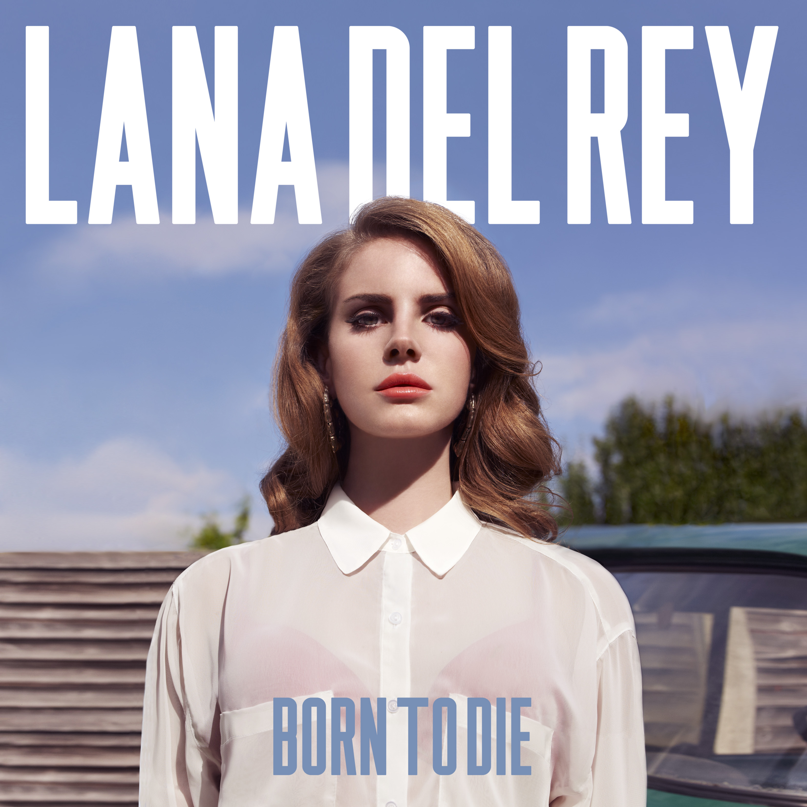

Born to Die
Lana Del Rey

Born to Die is the second studio album by American singer-songwriter Lana Del Rey. It was released on January 27, 2012, through Interscope Records and Polydor Records. The album was reissued on November 9, 2012, as an expanded version subtitled The
Paradise Edition. Prior to the release of the album, Del Rey had attracted attention with her 2011 singles "Video Games" and "Born to Die", which contrasted with contemporary electronic/dance music with their cinematic sound accompanied by dramatic
string instruments. A predominantly baroque pop and trip hop album, Born to Die musically features the same cinematic composition. The lyrics are about love, sex, and drugs, and features prominent references to 1950s and 1960s Americana. The album
was the world's fifth best-selling album of 2012, and had sold over 7 million copies by 2014. It spent more than 300 weeks on the US Billboard 200, where it peaked at number two, and topped charts in Australia and various European countries including
France, Germany, and the UK.Born to Die was supported by four further singles: "Blue Jeans", "Summertime Sadness", "National Anthem", and "Dark Paradise". "Summertime Sadness" peaked at number six on the Billboard Hot 100, becoming Del Rey's best-charting
single in the US. The album polarized contemporary critics; praises were towards the album's distinctive sound, and criticism targeted its repetitiveness and melodramatic tendencies. Del Rey's image during promotion of Born to Die was controversial;
tabloid media accused her of an inauthentic persona that was the result of forced marketing to gain an audience in the indie music scene. The album has been retrospectively ranked in best-of lists by several publications including The Guardian
and NME, and helped Del Rey acquire cult status among music fans.[1][2]